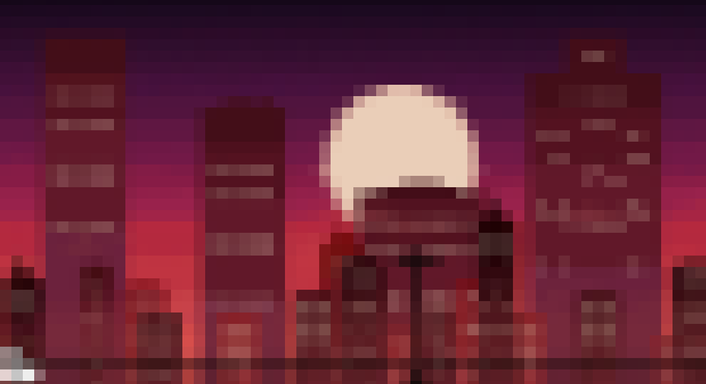

Начать сначала
«Ты прошёл три истории. Три журналиста. Три вида лжи.»
— Брайан Уильямс солгал ради себя. — Джанет Кук солгала ради истории.
— Вальтер Дюранти солгал ради власти.
«Где проходит граница между журналистом и манипулятором?»
Может быть, там, где ложь перестаёт служить читателю — и начинает
служить журналисту.